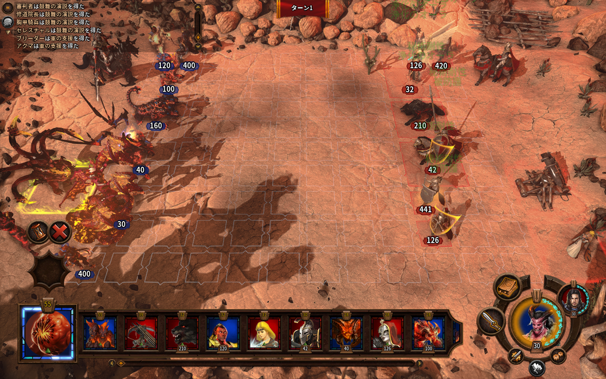

どんなゲーム？
マイト・アンド・マジック ヒーローズ7は、2015年にリンビック・エンターテインメントが開発し、ユービーアイソフトが発売したターン制のストラテジーゲームで、シリーズの第7作です。
英雄を率いて冒険マップを巡り、町を育て、クリーチャーの軍勢を集めて敵と戦う、シリーズおなじみの遊びに、
自由に伸ばし方を選べる「技能の輪」や、側面・背後からの攻撃が効く戦闘などが加わりました。
舞台はアシャン。皇帝を失って揺れる神聖帝国で、グリフィン公イヴァンは帝位をめぐる戦いに臨みます。
決断に迷うイヴァンのため、相談役たちの「影の評議会」が、それぞれの勢力に伝わる昔の物語を語って聞かせます。
入れ方
- Steam のライブラリで Might & Magic Heroes VII を右クリックし、「管理」→「ローカルファイルを閲覧」でゲームのフォルダを開きます。
（
Binaries や MMH7Game のフォルダがあるところです）
- zip の中の
Binaries と MMH7Game のフォルダを、そのままゲームのフォルダにコピーします。新しいファイルが加わるだけで、上書きされるファイルはありません。
- いつもどおり Steam から起動します。日本語で始まります。
ゲームのファイルは書き換えません。
MMH7Game\Localization\…\JPN：日本語の文です。MMH7Game\CookedPC\H7JP：日本語のフォントです（Noto Sans JP から作ったもの）。Binaries\Win64\dinput8.dll：起動時にゲームを日本語にし、ムービーの字幕に日本語のフォントを使わせる小さなプログラムです。
非公式コミュニティパッチ（UCP）と一緒に使う
有志による非公式コミュニティパッチ Unofficial Community Patch（UCP）1.3 と一緒に使えます。
UCP で直されたり加わったりした文（能力やクリーチャーの説明、追加クリーチャーなど）の日本語は HoMM7_JP_UCP.zip に入っています（UCP 本体は入っていません）。
- 先にこの日本語化パッチ（
HoMM7_JP.zip）を入れます。
- UCP 1.3 を、UCP の説明どおりに入れます。
HoMM7_JP_UCP.zip の中の Localization フォルダを、UCP を入れたフォルダ（ふつうは ドキュメント\My Games\Might & Magic Heroes VII\MMH7Game）にコピーします。UCP をゲームのフォルダに上書きで入れた場合は、ゲームのフォルダの MMH7Game にコピーし、同じ名前のファイルは上書きします。
Heroes 7.5 Mod と一緒に使う
ファン製の大型 mod Heroes 7.5 Mod（1.45）と一緒に使えます。
mod で加わったり書き換わったりした文（新しい勢力・クリーチャー・英雄・呪文・技能・アーティファクト・建物・マップの文章など）の日本語は HoMM7_JP_H75.zip に入っています（mod 本体は入っていません。mod は ModDB から入手してください）。

Heroes 7.5 Mod のインフェルノ軍
- 先にこの日本語化パッチ（
HoMM7_JP.zip）を入れます。
- Heroes 7.5 Mod 1.45 を、mod の説明どおりにインストーラーで入れます。
HoMM7_JP_H75.zip の中の Localization フォルダを、ドキュメント\My Games\Might & Magic Heroes VII\MMH7Game にコピーします。mod のインストーラーはこのフォルダを入れ直すので、必ず mod のあとに入れてください（mod を入れ直したときも、もう一度コピーします）。
UCP 用と Heroes 7.5 Mod 用は、どちらか一方だけを使います。
外し方
- 置いた
Binaries\Win64\dinput8.dll、MMH7Game\CookedPC\H7JP フォルダ、MMH7Game\Localization の中の 4 つの JPN フォルダを消します。ゲームは自動で英語に戻ります。
遊ぶときの注意
- タイトルのロゴ、地図や絵の中の文字は英語のままです。音声も英語のままです。
- ロード画面のヒントとクレジットは英語のままです（ヒントは日本語の文字がない英語用のフォントで描かれるため）。
- プロフィールや英雄、セーブの名前は英字で入力します。キーボードのショートカットは英語版と同じです。
- 日本語の文が長いときは、文字と文字の間で折り返します。
- エディタは英語のままです。ネットワーク対戦は試していません。
更新履歴
- v1.2：Heroes 7.5 Mod 1.45 用の日本語を追加。フォントに mod の文の文字を追加。
- v1.1：非公式コミュニティパッチ（UCP 1.3）用の日本語を追加。フォントに UCP の文の文字を追加。
- v1.0：最初の公開。
ご意見・誤訳の報告
誤訳や不自然な訳に気づいたら、GitHub の Issues で教えてください。
クレジット
- 日本語の文字は Noto Sans JP（SIL Open Font License 1.1）から作ったフォントで表示しています。ライセンスは配布物の
OFL.txt をご覧ください。
- このパッチの使用は自己責任でお願いします。
- 配布物には原作のプログラムやデータは入っていません。